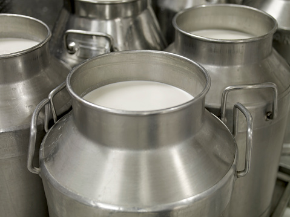
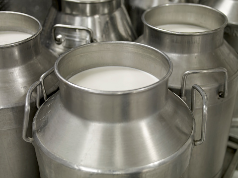

HFI is consistently working with farmers to
ensure effective milk production
at a minimum cost. We leverage the use of technology
to have quality production. HFI also boasts of partnerships
with reputable organizations such as Brookside.
Through our five program sheds,
HFI works with dairy producers, cooperatives,
processors and industry
partners to demonstrate the highest
standards in dairy farming.
Our first shed holds a total of 100 cows
with a daily output production of 1000litres per day.
Our second shed has a total of 100 cows
with a maximum output production of 1000litres per day.
Our third shed has a total of 200 cows
producing a maximum of 3000litres per day.
The fourth shed is the largest holding 300 cows
with the highest of output production 6000litres per day.
 
